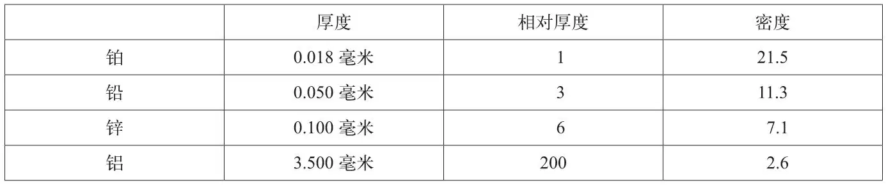
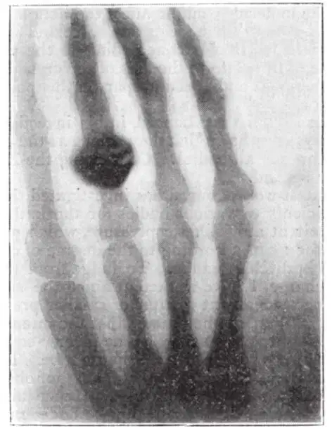
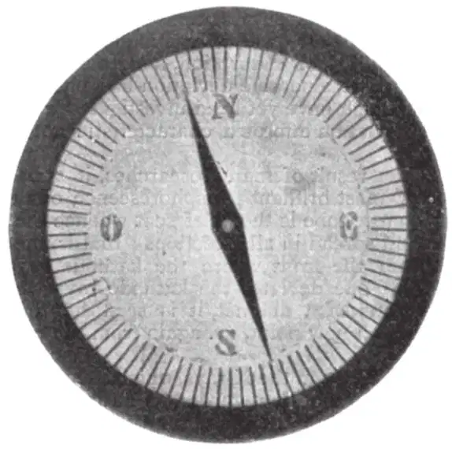

英文
英文伦琴
编者按
此文译自威廉·康拉德·伦琴1895年12月的一份关于发现了X射线的德文报告。当伦琴用阴极射线管（早期的科研人员也把它称作克鲁克斯管或莱纳德管，管中的电子或“阴极射线”被电场加速）进行实验时，他发现阴极射线管发射的射线能够穿透黑色的纸并在其另一侧的屏幕上显示出荧光。这种射线还可以穿透物质，人们可以利用它拍摄出像骨骼这样的“被遮挡的”物质的照片。伦琴推测这种射线不属于阴极射线，它似乎更接近紫外线，但具有更强的穿透力。“为了简便起见”，他把这类射线称为“X射线”。 英文
（1）让大号感应线圈中产生的放电通过希托夫真空管，或者通过抽成真空的克鲁克斯管或莱纳德管。管子用黑纸包裹严实。在完全黑暗的房间里，将一面涂有铂氰酸钡的纸放在管子旁边，不论朝向管子的是涂有铂氰酸钡的一面还是没有涂的那面，纸都会被鲜艳的荧光照亮。在2米之外，这种荧光依然可见。很显然，荧光来源于真空管中。 英文
（2）由此可见，某些射线能够穿透这种紫外光、太阳光和电弧光都几乎不能透过的黑纸板。这就引起了人们研究这种射线到底能够多大程度地穿透其他物质的兴趣。很容易就能证明，所有物质对这种射线都是透明的，只是透明的程度大不相同。比如，纸是非常透明的，即使将荧光屏置于一本1,000页厚的书后面，我们仍然会在荧光屏上看到亮光，印刷油墨也不会造成明显的阻挡。类似地，单独一张卡片不会明显减弱光的强度，即使在两叠卡片后面我们也仍然能看到亮光。同样，单张锡箔纸的遮挡几乎不会使荧光屏上出现阴影，要产生明显的遮挡效果就必须重叠许多张锡箔纸。厚木块对于这种射线也是透明的。2～3厘米厚的松木板的吸收效果非常微弱。15毫米厚的铝板也能使X射线（为了简便起见，我将称这种射线为X射线）透过，但是能够大幅度地减弱荧光。玻璃板的作用与厚度相近的铝板类似，不过，含铅的玻璃对这种射线的阻挡效果比不含铅的玻璃更强。几厘米厚的硬质橡胶也是透明的。如果把手放在荧光屏前，屏幕上就会显示出骨骼的黑影，而周围组织则只有模糊的轮廓。 英文
水和其他几种液体对于这种射线都是非常透明的。氢气的透明度并没有明显强于空气。铜、银、铅、金和铂质的金属板只有在很薄的时候才能使这种射线透过。0.2毫米的铂能使这种射线部分透过，银和铜则更透明一些。1.5毫米厚的铅板基本上是不透明的。将一根边长为20毫米的方木棒的一个侧面涂上铅白，当木棒涂有铅白的面与射线平行时，几乎不会产生阴影，但是当射线必须穿过涂有铅白的一面时，就会产生明显的阴影。不论是固态的金属盐还是金属盐溶液，一般都能像金属本身一样阻挡该射线。 英文
（3）根据上述实验我们可以得出结论：物质的密度是这样一种性质，它的变化主要影响射线在该物质中的透过程度。至少其他性质的影响看起来都不如密度明显。不过，单是密度还不能完全决定物质对该射线的透明度。我用厚度相近的冰洲石板、玻璃板、铝板和石英板作为样品进行的实验表明，尽管这些物质具有近似相同的密度，但冰洲石对该射线的透明度却比其他物质小得多。在用冰洲石进行的实验中，我从来没有观察到像用玻璃进行的实验中出现的那样明显的荧光（见下文，第4部分）。 英文
（4）对于所有物体，增加厚度都会提高其对X射线的阻挡程度。我们已经在照相底片上对阶梯状叠放的多层锡箔进行了成像，得到的图像表现出了厚度的这种有规律的增加。如果根据此原理制成适当的仪器，则可以作为光度计使用。 英文
（5）为了得到对X射线相同的减弱效果，我将铂、铅、锌和铝分别制成如下规格的金属片。附表给出了具有相同减弱效果的各种金属片的密度和相对厚度。 英文

从这些数据中可以清楚地看出，我们不可能根据金属密度与其厚度的乘积来确定其透明度。透明度增加的速度比该乘积减少的速度快很多。 英文
（6）X射线所产生的显著作用并不是只能使铂氰酸钡发出荧光。可以观测到，X射线也能使其他一些物质发出荧光，例如硫化钙、铀玻璃、冰洲石和岩盐等。 英文
在这方面，特别让人感兴趣的是照相干版对X射线是敏感的。这就使我们可以将实验现象记录下来以避免出现错误。利用照相的方法，我已经确认了很多最初通过肉眼在荧光屏上观测得到的实验结果。X射线穿透木块或纸板的能力很有用处。在对照相干版进行曝光时，可以不用除去遮光板或者其他保护盒，因此实验就不必在暗室中进行。当然，千万不要把装有未曝光照相干版的盒子放在真空管附近。 英文
干版上留下的影像到底是X射线的直接效应，还是由干版材料发出的荧光引起的次级效应，现在看来还是一个令人疑惑的问题。和普通的干版一样，胶片也可以记录到影像。 英文
我还没能通过实验证明X射线是否可以产生热效应，不过我们猜测它可以，因为荧光现象表明X射线可以引起能量转移。而且可以肯定的是，照射在物体上的X射线并没有全部以荧光形式离开物体。 英文
人眼的视网膜对这种射线非常不敏感：即使眼睛离装置很近也看不见任何东西。实验结果清楚地表明，这并不是因为该射线在眼睛这部分结构中的透过程度不够。 英文
（7）在通过实验研究了不同介质随着厚度增加对该射线的透明度的变化之后，我又研究了X射线是否会被棱镜偏转。在顶角为30°的云母棱镜中分别装入水和二硫化碳进行实验，结果发现照相干版和荧光板上都没有显示出偏移。为了对照，我也用可见光在相同的实验装置上进行了实验，结果发现可见光在穿过上述两种棱镜时分别偏转了10毫米和20毫米。 英文
在使用硬质橡胶和铝制成的棱镜进行实验时，我得到的照相干版上的影像显示射线可能发生了偏转，不过这一点还不能确定，而且偏转所对应的折射率最多也只有1.05。使用荧光屏时则观测不到偏转。用较重金属进行的研究目前还没有任何结果，这是因为它们的透明度都很小，因而透射的射线非常微弱。 英文
考虑到X射线能否被偏转这个问题的重要性，我们就有必要尝试用其他方法来研究X射线能否发生折射。由于反射和折射的原因，微细粉末形成的厚层几乎不能使入射光透过。不过，这种多层粉末对于X射线的透明度与同质量同组成的整块固体是一样的。因此我们不能得出X射线具有常规的反射或折射特性的结论。我又对细粉末状的岩盐、电解得到的细银粉和已经在化学实验中使用了多次的锌粉进行了研究。所有研究结果都表明，不论是用荧光屏还是用照相的方法，粉末与相应的固体对X射线的透明度没有任何差别。 英文
因此，很明显透镜是不能会聚X射线的。事实上，大尺寸的玻璃透镜和硬质橡胶透镜对X射线都没有会聚作用，这已经得到了证明。圆柱的透视影像显示，中间部分的阴影比边缘更深一些；如果在圆柱内部填入透明度比柱体材料更高的物质，那么在得到的影像中，中间部分会比边缘更亮一些。 英文
（8）上述实验和另外一些我未提及的实验，都表明这种射线不具备常规的反射能力。不过，我还是要详细介绍一个乍看上去似乎会使人们得出相反结论的实验。 英文
实验中，我将一块用黑纸套保护起来的玻璃干版置于X射线中，使其玻璃面靠近真空管，并用铂、铅、锌和铝质的星形金属片部分地遮挡干版的感光膜。在显影后的负片上，铂片和铅片下方出现了黑色的星形影像，锌片下方的影像更加清晰，而铝片并没有产生阴影。由此看来，前三种金属可以反射X射线。不过也可能有另外的解释。我又重复了这一实验，这次唯一的不同之处是，我在感光膜和星形金属片之间插入了一块薄薄的铝箔。这块铝箔对紫外线是不透明的，但对X射线是透明的。结果出现了和以前一样的影像。这再次表明X射线在金属表面发生了反射。 英文
如果综合考虑这一观测结果和其他一些结果，包括关于粉末透明度的结果以及关于表面状态不能有效改变X射线穿过物体的路径的结果，我们就会得出这样一个可能的结论：对于X射线来说，并不存在普通意义上的反射，物体对于X射线的作用，就像混浊介质对于可见光一样。 英文
我还没有得到任何可以表明在不同介质表面X射线会发生折射的证据，这样看来，X射线在所有物质中的传播速度可能都相同，而且在一种渗透一切物质、包容各种物质分子的介质中也是一样的。随着物质密度的增大，其分子对X射线的阻挡效果也变得更加明显。 英文
（9）分子的几何构型看起来可能会影响物质对X射线的阻挡作用，例如，对于冰洲石晶体而言，表面与晶轴之间相对取向的不同可能就会导致不同的现象。但是，为此而用石英和冰洲石进行的实验却得到了阴性的结果。 英文
（10）我们知道，莱纳德在对阴极射线的研究中已经指出，阴极射线属于以太，可以穿透任何物体。估计X射线可能也是这样的。 英文
莱纳德在最近的工作中研究了各种物体对阴极射线的吸收系数，比如一个大气压下的空气的吸收系数，根据放电管抽真空程度的不同，每一厘米对应的吸收系数分别是4.10、3.40和3.10。为了根据放电的本质来作出判断，我在基本相同的压强下进行了研究，不过偶尔也会用更高一点或更低一点的压强。利用韦伯光度计，我发现荧光的强度近似与屏幕到放电管距离的平方成反比。这个结论是根据三组非常一致的观测结果得到的，其观测距离分别为100毫米和200毫米。因此，空气对X射线的吸收比对阴极射线的吸收低很多。这一结果与前述的在距真空管2米处的屏幕上仍会出现荧光的结果是完全一致的。大体上，其他物质的性质与空气类似，它们对X射线比对阴极射线更加透明。 英文
（11）另一个更明显也更值得关注的区别是磁场的作用。即使是在非常强的磁场中，我也没有观测到X射线的任何偏转。 英文
阴极射线在磁场作用下会发生偏转，这是它的独特性质之一。赫兹和莱纳德曾经观测到存在好几种阴极射线，它们的区别在于激发磷光的能力不同、被吸收的容易程度不同以及在磁场作用下的偏转不同。但是对于所有已经被研究过的阴极射线，人们都观测到了显著的偏转，我认为这种偏转代表了阴极射线的一种绝不该被忽视的特性。 英文
（12）很多研究结果表明，放电管管壁上磷光最强的位置是在X射线产生并向四周各个方向发散的那个源头处，也就是说，X射线产生于阴极射线轰击玻璃的前沿位置。如果利用磁场使管中的阴极射线偏转，就会看到X射线从另一个位置上产生，但仍然是在阴极射线的终端位置。 英文
基于这一原因，我们不能把在磁场作用下并不偏转的X射线看作是已经穿透玻璃的阴极射线，因为按照莱纳德的说法，这条通道不可能是由阴极射线的不同偏转造成的。由此我断定，X射线与阴极射线是不同的，它是阴极射线作用于真空管的玻璃表面而产生的。 英文
（13）并不是只有用玻璃才能产生X射线。我曾利用一种被2毫米厚的铝板包裹起来的装置得到了X射线。以后我将研究其他物质是否也能产生X射线。 英文
（14）在描述这种现象时我使用了“射线”这个词，这在一定程度上是因为，将不太透明的物体插入到源和照相干版或荧光屏之间时会产生规则的阴影。 英文

图1．活人手指（第三指上戴着一枚戒指）骨骼的影像 英文
我已经观察并用照相记录了很多这样的阴影。由此，我记录下了门的局部轮廓。我是用含铅涂料刷了门的轮廓，然后把放电管放置在门的一侧，而把光敏照相干版放置在另一侧，这样就得到了门的局部轮廓的影像。我还记录了其他许多物体的阴影，这包括手掌骨骼（图1）、缠在绕线筒上的导线、一套装在盒子里的砝码、完全密封于金属盒子中的罗经刻度盘和指针（图2）、一块在X射线下显示出具有不均匀缺陷的金属片，以及其他一些物品。 英文

图2．完全密封于金属盒子中的罗经刻度盘和指针的影像 英文
为了说明射线的直线传播，我用针孔照相的方法拍摄了用黑纸覆盖的放电装置。照片虽然有些模糊，但却可以明白无误地分辨出装置。 英文
（15）我曾经试图寻找X射线的干涉效应，但并没有检测到，这可能是由于强度太低的缘故。 英文
（16）关于静电力对X射线是否有作用的研究工作正在进行，但目前尚无结论。 英文
（17）也许有人会问X射线到底是什么。既然这种射线不是阴极射线，有人可能就会根据其激发荧光和引发化学反应的能力猜想它是紫外光。然而，一系列认真的思考都是反对这种观点的。如果X射线真是一种紫外光，那么这种紫外光就必须具有如下性质：
（a）它在由空气进入水、二硫化碳、铝、岩盐、玻璃或锌时，不会发生折射。
（b）它在上述物质的表面不会发生常规的反射。
（c）任何普通的偏振介质都不能使它偏振。
（d）不同物质对它的吸收主要取决于该物质的密度。 英文
也就是说，这种紫外线必须具有与可见光、红外线以及迄今为止已知的紫外线都十分不同的性质。 英文
看起来这些是很难成立的，因此我想到了另一种假说。 英文
这种新型的射线与普通光之间看起来应该存在着某种关联，至少在形成阴影、激发荧光以及引发化学反应这些方面都是相似的。长期以来我们都知道，除了能够解释光现象的横向振动外，在以太中可能存在纵向振动，某些物理学家甚至认为纵向振动是必定存在的。尽管目前人们还不完全清楚纵向振动是否存在，也没有通过实验论证这种纵向振动的性质，但是，难道我们就不能认为这种新型的射线属于以太中的纵波吗？ 英文
我必须要承认的是，在研究过程中我越来越倾向于这一观点。另外我也十分清楚这一新假说还需要更为可靠的证据，我承认在目前的情况下抛出这一观点是比较冒昧的。 英文
（王耀杨 翻译；江丕栋 审稿）
* 作者为伦琴。由阿瑟·斯坦顿译自1895年的《维尔茨堡物理学医学学会会刊》。